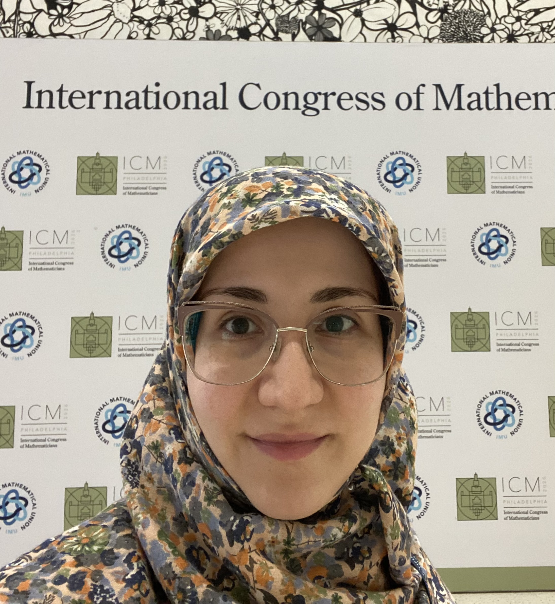

Reihaneh Malekian
PhD Candidate in Statistics · Columbia University
I am a PhD candidate in Statistics at Columbia University, where I am fortunate to be advised by Sumit Mukherjee. I am on the 2026–27 postdoctoral job market. Before coming to Columbia, I received my B.Sc. and M.Sc. in Mathematics from Sharif University of Technology in Iran. My research lies broadly in probability and high-dimensional statistics, with particular interests in large deviations, random graphs and hypergraphs, Gibbs measures and interacting systems, and statistical inference for dependent data.

Papers
Fluctuation in Mean Field Potts Model
Statistical Inference for Online Least-Squares SGD under Stationary Dependence
Contact
Department of Statistics
Columbia University
New York, NY
Email: rm3942@columbia.edu · LinkedIn